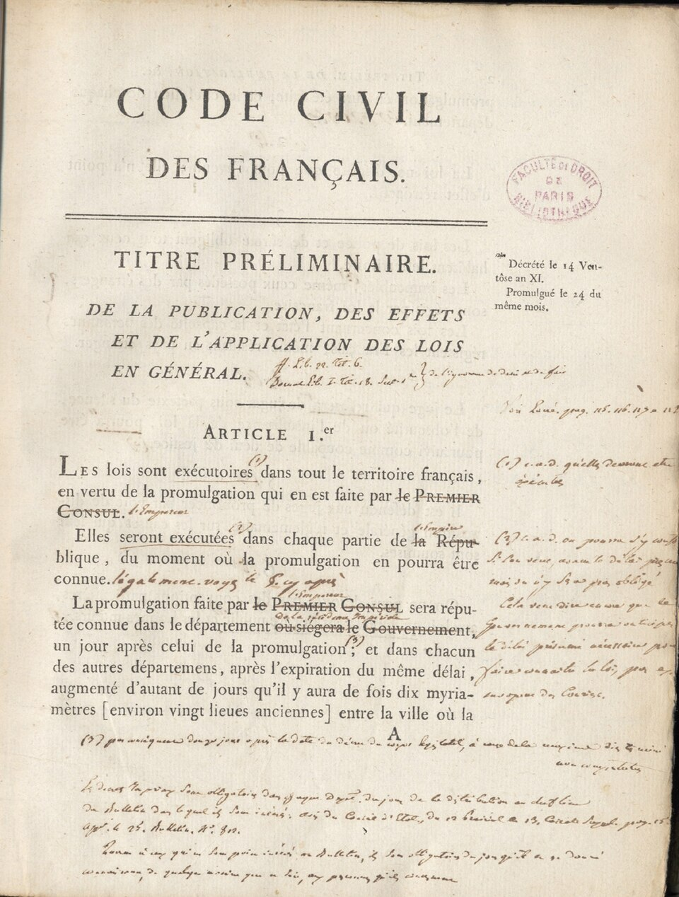
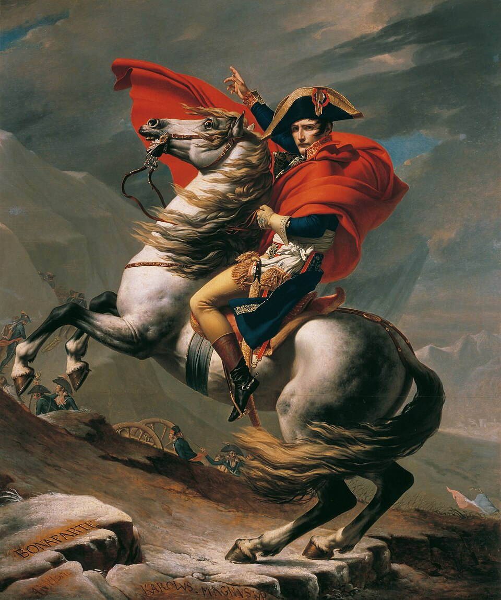

⏱️ 10초 카드 · 프랑스 혁명·제1제국 (1769~1821)
나폴레옹 법전유럽 제패와 몰락황제가 된 혁명가
여는 질문 — 혁명을 지킨 사람과 혁명을 배신한 사람이, 같은 한 사람일 수 있을까?
이름
한국어나폴레옹
원어Napoléon Bonaparte
실제 발음나폴레옹 보나파르트
로마자Napoleon Bonaparte
영어권Napoleon Bonaparte
왜 이 사람인가
계몽·시민혁명 에피소드의 끝과 그다음을 잇는 인물이에요. 그는 프랑스 혁명이 낳은 능력주의의 상징이면서, 그 혁명을 황제 대관으로 갈아 치운 사람이죠. 자유·평등의 이념을 법전으로 유럽에 퍼뜨린 동시에, 정복과 노예제 재도입으로 그것을 배신했어요. '혁명의 두 얼굴'을 한 몸에 담은, 그래서 200년째 평가가 갈리는 인물이에요.
생애
코르시카의 시골 귀족 아들로, 혁명이 신분의 천장을 부수자 재능 하나로 26세에 장군이 됐어요 — '기회의 평등'이 풀어놓은 에너지의 가장 극적인 증명이죠. 1799년 쿠데타로 권력을 잡고 1804년 스스로 황제관을 썼어요.
안으로는 나폴레옹 법전(법 앞의 평등·재산권·신앙의 자유)으로 혁명을 제도화했고, 은행·학교(리세)·행정 체계까지 — 오늘날 프랑스의 골격 상당 부분이 그의 설계예요. 밖으로는 정복 전쟁으로 그 법전을 유럽에 퍼뜨렸고, 의도치 않게 각지의 민족주의를 깨웠죠(독일 통일 → 에피소드 03!).
그림자 — 쿠데타와 검열, 식민지 노예제 부활(아이티 원정 — 그리고 패배!), 수백만 명이 죽은 전쟁들. 러시아의 겨울(1812)에 제국이 꺾이고 워털루(1815) 후 세인트헬레나섬에서 생을 마쳤어요. '내 진짜 영광은 전승이 아니라 민법전'이라던 그의 예언은 적중했죠 — 제국은 10년, 법전은 200년을 넘게 살고 있으니까요.
자료로 보기 — 유묵·사진



남긴 말
“나의 진정한 영광은 마흔 번의 전투 승리가 아니다. 워털루가 그 모든 기억을 지웠으니까. 무엇도 지우지 못할 것은 나의 민법전이다.”
유배지 세인트헬레나에서 자신의 일생을 되돌아보며 한 말로 전해짐 · 출처: 세인트헬레나 회고(라스 카즈 기록, 전언)
“역사란 사람들이 합의한 하나의 우화일 뿐이다.”
역사 서술의 자의성에 대해 남겼다고 전해지는 경구 · 출처: 나폴레옹의 말로 전해지나 원출처는 논쟁(전언)
연표
- 1769코르시카에서 출생
- 1799브뤼메르 쿠데타
- 1804법전 공포 · 황제 즉위
- 1812러시아 원정 — 파국
- 1815워털루 — 세인트헬레나 유배
- 1821사망
생애의 길 — 코르시카에서 세인트헬레나까지 🗺️
변방 섬의 소년이 유럽을 제패하고 외딴섬에서 스러지기까지. 번호를 차례로 눌러 보세요.
현재 지도 위 경로예요. 지도가 이렇게까지 넓어지는 인물은 드물어요 — 그가 흔든 세계의 크기이자, 마지막 점(세인트헬레나)이 얼마나 멀고 외로운 곳인지도 함께 보여 줘요.
빛과 그림자해방자이자 정복자, 혁명의 전파자이자 배신자 — 이 도감에서 '빛과 그림자' 연습의 종합 문제 같은 인물이에요. 유럽 각국에서 그에 대한 평가가 지금도 갈리는 이유죠.
더 깊이 (고등·일반)
나폴레옹 법전 — 칼보다 오래 남은 것
1804년의 나폴레옹 법전(프랑스 민법전)은 그의 가장 오래가는 유산이에요. 신분이 아니라 법 앞의 평등, 계약의 자유, 사유재산 보호, 종교의 자유를 한 권에 명문화했죠. 이 법전은 그가 정복한 유럽 곳곳에 이식됐고, 이후 라틴아메리카·중동·동아시아의 민법에까지 영향을 줬어요. 한국 민법의 뿌리를 거슬러 올라가도 이 흐름이 닿아요. '혁명의 이념을 일상의 규칙으로 굳힌 책'이라는 점에서, 전쟁보다 이 법전이 그를 더 멀리 데려갔어요.
참고: 나폴레옹 법전(프랑스 민법전) 영향 일반
해방자인가 정복자인가 — 유럽의 두 기억
나폴레옹이 진군한 곳에서는 봉건적 특권과 농노제가 무너지고 법 앞의 평등이 들어왔어요. 그래서 어떤 지역은 그를 '구체제를 부순 해방자'로 기억하죠. 동시에 그의 군대는 점령지에서 막대한 세금과 징병, 약탈을 강요했고, 이는 도리어 각 나라의 '민족주의'를 깨웠어요(특히 독일·스페인). 같은 군대가 누군가에겐 해방, 누군가에겐 점령이었던 것 — 제국주의 에피소드의 '문명화 사명' 논쟁과도 닮은 양가성이에요.
참고: 나폴레옹 점령의 양가적 평가 일반
스스로 관을 쓴 황제 — 혁명의 자기 부정?
1804년 대관식에서 나폴레옹은 교황이 지켜보는 가운데 스스로 황제관을 머리에 얹었어요. 왕을 처형하고 시작한 혁명이 다시 황제를 세운 이 장면은, 혁명의 자기 배신처럼 읽혀요. 그를 흠모하던 베토벤이 교향곡 〈영웅〉의 헌정을 철회했다는 일화도 여기서 나오죠. 하지만 그는 혁명의 '능력주의'와 법 개혁을 황제정 안에 담아 유지하려 했어요 — 단순한 복고가 아니라 '혁명의 성과를 한 사람이 독점한' 복잡한 사건이에요.
참고: 나폴레옹 대관식·평가 일반
노예제를 되살린 손 — 아이티의 비극
혁명기 프랑스는 1794년 식민지 노예제를 폐지했었어요. 그런데 나폴레옹은 1802년 이를 뒤집어 노예제를 다시 도입하려 했고, 카리브해 생도맹그(아이티)에 대군을 보냈어요. 이 전쟁에서 흑인 지도자 투생 루베르튀르가 속아 붙잡혀 프랑스 감옥에서 죽지만, 결국 아이티는 독립을 쟁취하죠(도감의 투생 페이지). '자유·평등'을 법전에 새긴 그가 다른 손으로 노예제를 되살리려 했다는 것 — 나폴레옹의 가장 어두운 그림자예요.
참고: 1802 노예제 재도입·아이티 혁명 일반
세인트헬레나 — 신화를 직접 만든 유배
워털루 패전 뒤 나폴레옹은 대서양 외딴섬 세인트헬레나에 유배돼 그곳에서 죽었어요. 그는 마지막 몇 년 동안 측근에게 회고를 받아 적게 하며, 자신을 '혁명의 수호자이자 평화를 원했던 사람'으로 그리는 이야기를 정성껏 빚었죠. 오늘날 우리가 아는 '낭만적 영웅 나폴레옹'의 상당 부분이 이 자기 연출의 산물이에요. (그의 사인을 두고 위암설과 비소 중독설이 오래 논쟁됐다는 점도 이 섬의 미스터리고요.)
참고: 세인트헬레나 회고록·사인 논쟁 일반
사람의 그물 — 함께 읽을 인물
이 인물이 나오는 이야기
더 공부하기 — 여기서 출발하세요
📚 책으로
- 나폴레옹 (Napoleon: A Life) · 앤드루 로버츠방대한 서한을 토대로 한 균형 잡힌 현대 표준 전기.
- 시민들 (Citizens) · 사이먼 샤마프랑스 혁명 전체의 흐름 속에서 나폴레옹이 어디서 왔는지 보여 주는 책.
📜 1차 사료
- 나폴레옹 법전(프랑스 민법전) 번역제1조부터 읽어 보면 '혁명을 규칙으로 굳힌다'는 말의 뜻이 보여요.
- 세인트헬레나 회고(라스 카즈 기록)나폴레옹이 스스로 만든 자기 이미지 — 사료이자 '연출'로 함께 읽기.
🎬 영상으로
- 다큐 〈나폴레옹〉 (BBC/PBS 등)🟡 전쟁 장면이 많아요 — 정복과 법 개혁을 함께 다룬 다큐로 균형을.
📍 가 볼 곳
- 앵발리드 (파리)나폴레옹의 거대한 석관이 안치된 돔 — 사후의 영광을 눈으로.
- 아르크 드 트리옴프(개선문, 파리)그가 군대의 승리를 기리려 세우기 시작한 기념물.